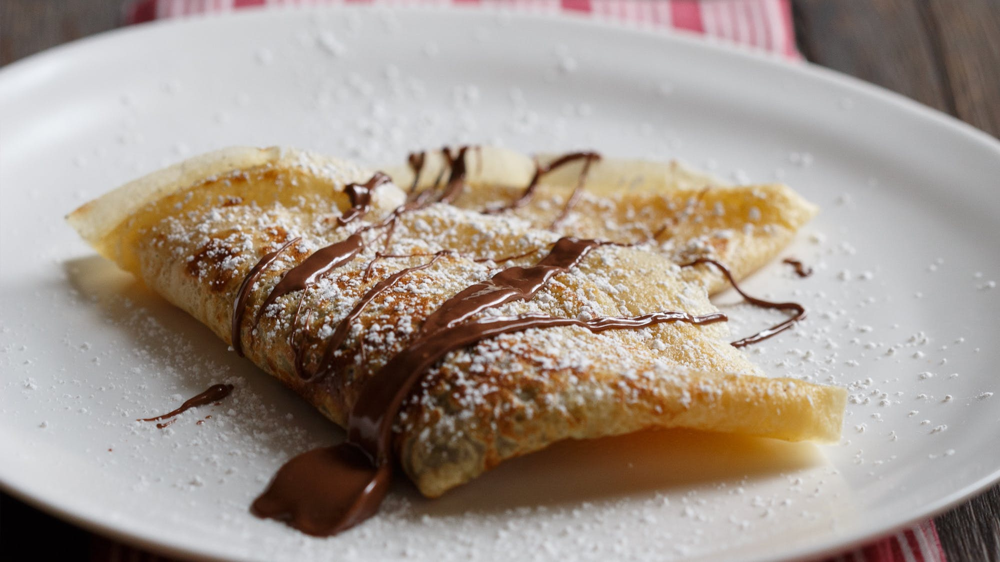

Simple Breakfast Crêpes
Introduction
For my recipe, I chose a simple crêpe recipe I occasionally make. Crêpes are my favorite way to start the weekend. They are simple, versatile and delicious, I hope you enjoy.

Ingredients
- 1 cup all-purpose flour
- 2 large eggs
- ½ cup milk
- ½ cup water
- ¼ teaspoon salt
- 2 tablespoons butter, melted.
Instructions
- Stir the flour and eggs together in a mixing bowl. Gradually add in the wet ingredients, while stirring.
- Add salt and melted butter to mixing bowl. beat until mixture is smooth.
- Heat a lightly oiled frying pan on medium-high heat. Use ladle to scoop batter on to the frying pan mixing it around the pan with the bottom of the ladle, using around ¼ cup for each crêpe. Tilt the pan around so that the batter coats the surface evenly.
- Cook until the top of the crêpe is no longer wet, and the bottom is solid, (1 to 2 minutes). Flip and cook until the other side has turned light brown, (about 1 minute more). Serve hot with your choice of toppings.